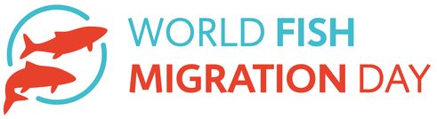

News ·
World Fish Migration Day

Il World Fish Migration Day (WFMD) è un evento globale-locale ideato per sensibilizzare la popolazione sull’importanza della libera percorribilità dei fiumi per le migrazioni dei pesci. L’evento viene celebrato per la seconda volta e GRAIA insieme al Parco Lombardo della Valle del Ticino, entrambi coinvolti nel Progetto Life “Con.Flu.Po”, parteciperanno in prima persona, contemporaneamente con più di altre 1000 organizzazioni presenti in giro per il mondo.
L’evento è parte delle attività di diffusione previste nel Progetto Life “Con.Flu.Po”, legato al ripristino del corridoio nel Fiume Po. Il Progetto Life sta realizzando il più grande passaggio per pesci italiano in corrispondenza della diga di Isola Serafini sul Fiume Po (sarà inaugurato nel 2017). La specie emblema del progetto è lo storione cobice (Acipenser naccarii), e l’attività di ripopolamento è svolta dal Parco Lombardo della Valle del Ticino.
In due giornata, il 16 e il 25 maggio 2015, due scuole verranno coinvolte nelle attività di ripopolamento, e gli studenti rilasceranno direttamente i pesci nel fiume. Questo sarà il momento perfetto per far conoscere il World Fish Migration Day (WFMD), e per esporre i progetti del Parco sulla percorribilità fluviale (passaggi per pesci).
Sito internet del World Fish Migration Day